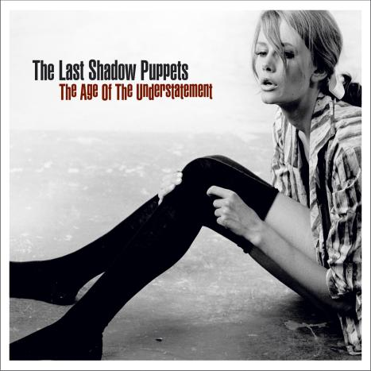

|
We start off this year's sampler with a side project band by Alex Turner from Arctic Monkeys and The Rascals' Miles Kane. With songs that recall 60's spaghetti western movie soundtracks, Turner and Kane recreate a long lost sound of composers such as Ennio Morricone. Sweeping violins and twanging guitars are found on most tracks. This conciliatory tune off their debut album was my favorite of several stand-out songs of a similar style. Somehow I felt myself relating to Turner as he sings "About as subtle as an earthquake, I know. My mistakes were made for you." To top it off is the wonderful cover art. |
 |